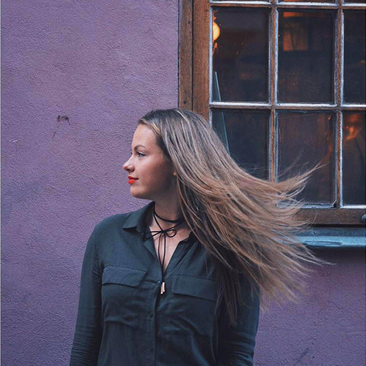
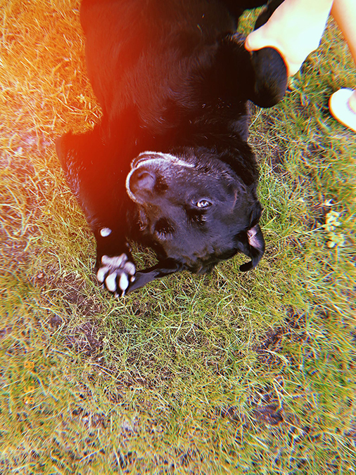
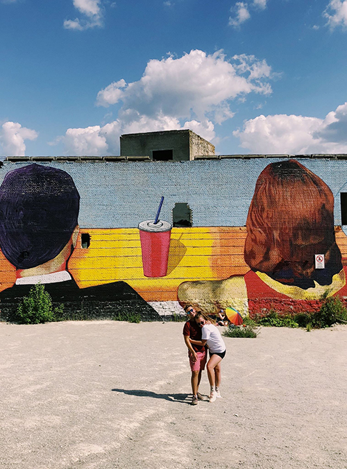
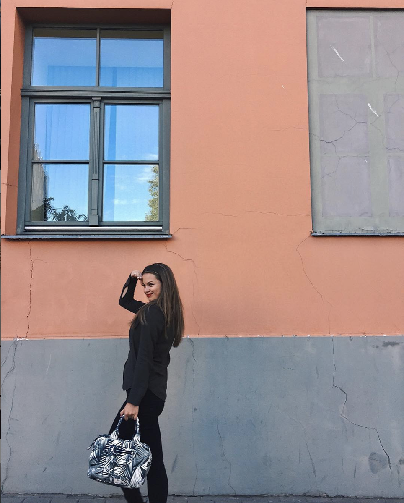

ABOUT K.K.
My name is Karlīna Kluce and I just turned nineteen. Currently I am studying in KEA, Multimedia Design and Communication programme.
I have been living in Copenhagen for about 5 months already. I'm trying to understand and get along with biking all the time and not seeing Sun every day.
My biggest passions are dancing, walking through forest with my dog and photographing everything I find interesting or different.
From childhood I have always wanted to be an actress, but going to Denmark after highschool sounded more challenging
, so h e r e I am.



